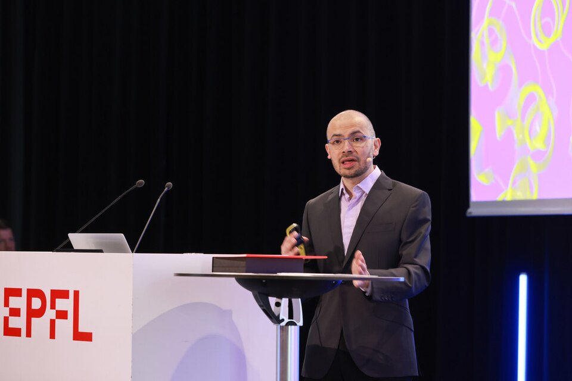

Demis Hassabis · DeepMind 창업자
바둑은 체스보다 경우의 수가 훨씬 많아 컴퓨터가 풀기 어려운 게임으로 알려져 있었습니다. 1997년 체스 챔피언이 무너진 뒤에도, 바둑은 ‘최소 10년은 더 걸린다’는 게 학계의 일반론이었습니다.
2016년 3월, 영국 DeepMind의 AlphaGo가 한국의 이세돌 9단과 5번기를 둡니다. 결과는 4승 1패로 AlphaGo의 승리. 한국에선 매 경기 수백만 명이 시청했고, 마지막 대국이 끝난 뒤 이세돌은 — “저는 졌지만 인류가 진 건 아니라고 생각합니다”라고 말했습니다.